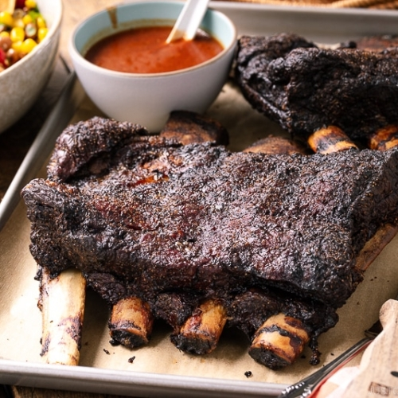

Summary:
This is an old family recipe that is simple, easy on the wallet, and tastes amazing. This recipe
requires only about 15 minutes of preparetion work but will need to cook anywhere from 4 - 6 hours,
so plan accordingly.
Ingredients
- 1 Rack of St. Louis Cut Pork Ribs
- 1 Cup Base Rub (Equal parts Salt, Black Pepper, & Garlic Powder/Finely ground garlic
- 1.5 - 2 Cups of your favorite Rib Rub (or combine equal parts brown sugar, smoked paprika, powdered caramelized onion butter
- 1 Cup of your favorite BBQ or Rib Sauce (Sweet Baby Ray's or Kraft standard BBQ sauce does just fine)
- 1 Stick of butter or equivalent from a tub
- 1 Qt of 3:1 Water and Apple Juice (or Apple Cider Vinegar) in a spray/spritzer bottle
- 1 Roll of Aluminum foil
.
Preparation & Cooking Instructions:
- Load your smoker with hickory wood (chunks, pellets, logs, whatever fuel type your rig calls for)
- Pre-heat smoker to 250 Degrees Fahrenheit.
- Place ribs on cutting board (meat side down). Taking a paper towel to help with grip, remove the membrane covering the bones (it will just burn)
- Pat down entire rack of ribs with paper towel to remove excess moisture
- Trim excess fat from ribs as well as tip/fringe areas prone to burning up (no need to be precise, just form the ribs into a neat rectangle using a butcher/utility knife)
- Before placing ribs in smoker, remember they will cook how you place them so orient the ribs so that as much as possible the bones are perpendicular to the long sides of the meat
- Once smoker reads 250 degree temperature, place ribs - bone side down - directly onto rack in smoker.
- Allow the meat to smoke for 2 hours. Spray the meat every 30 minutes with your water/apple juice mixture to keep the meat from drying out.
- While meat is smoking, prepare your wrap: pull an aluminum foil sheet out and place on table (about 3 feet long), place another of same length on top of that
- In the aluminum sheet, create a 'dotted line' effect of half-inch thick butter stick slices that run the length of the rib rack - not the foil sheet - and top that butter line with 1/4 cup BBQ sauce.
- Once the meat has smoked 2 hours, remove it from the smoke and place it - meat side DOWN - onto the butter/sauce mixture on the foil sheets
- Fold the foil sheets over the meat so that no heat can escape easily but also so that the meat is easily accessible for temperature reading.
- Each hour take the meat's temperature reading. Once it reads 195 Degrees Fahrenheit, remove it from the smoker, but leave smoker on. Not quite done!
- Open the aluminum foil wraps and drain rendered fat/juices from the foil then flip the meat over so it is bone side down while sitting on the foil sheet.
- fold each side of the foil sheet so that it forms a container around the ribs with each side being about as high as the ribs are.
- Lightly brush BBQ sauce all over the ribs (use as little or much as you like, I prefer a light hand in this case), making sure to get the sides and exposed bones tips as well.
- Dust just a pinch of your rib rub (paprika/sugar rub.. not the salt/pepper/garlic rub) along the top of the ribs
- Return the ribs to the smoker and allow them to sit on the rack for 10 -15 minutes to allow the sauce/rub topping to set.
- Remove the ribs from the heat and let them rest a minimum of 20 minutes.
- Using a butcher's knife, slice the meat along each rib-bone and then serve!
Return Home